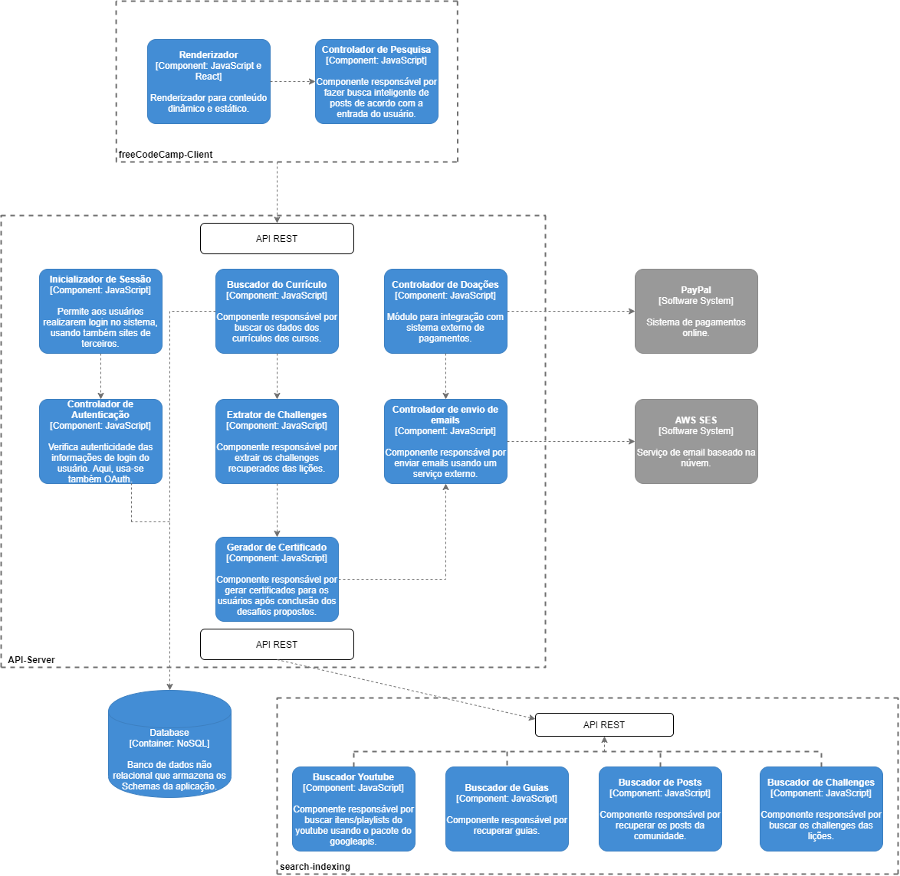
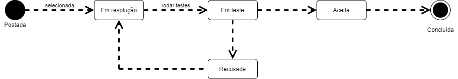

Documentação arquitetural para a plataforma freeCodeCamp
Autor
Este documento foi produzido por Arthur Silva Lima Guedes.
- Matrícula: 118110410
- Contato: arthur.guedes@ccc.ufcg.edu.br
- Projeto documentado: https://github.com/freeCodeCamp/freeCodeCamp
Descrição Arquitetural – freeCodeCamp
Este documento descreve a arquitetura da plataforma freeCodeCamp. Essa descrição foi baseada principalmente no modelo C4.
É importante destacar que o foco nessa descrição são os módulos api-server, client e parte do módulo tools, mais especificamente o search-index, do repositório acima.
Descrição Geral sobre o freeCodeCamp
freeCodeCamp é uma comunidade sem fins lucrativos com o propósito de ajudar no processo de aprendizagem de desenvolvimento de software. Através de uma plataforma web de aprendizagem interativa (e outros meios como fóruns e posts), milhares de pessoas tem a oportunidade de aprender sobre desenvolvimento web, análise de dados, machine learning, entre diversos outros assuntos, tudo isso de forma 100% gratuita. Algumas respostas para perguntas frequentes podem ser encontradas aqui.
A plataforma de freeCodeCamp
Objetivo Geral
Implementar uma plataforma de aprendizagem interativa que torne acessível aos usuários assuntos das mais diversas áreas da computação.
Objetivos Específicos
É de extremo interesse acompanhar o progresso do aluno em relação ao curriculum (similar a um guia de conteúdos), o quanto o mesmo está progredindo nas lições e nos desafios.
Contexto
Abaixo, é possível observar o diagrama de contexto do sistema. Nele, temos um usuário que, em nosso contexto, é descrito como o estudante (ou potencial estudante) da área de programação. A plataforma freeCodeCamp usa o AWS SES (um dos sistemas externos) para o envio de emails para os estudantes, além de um sistema de pagamentos (o PayPal) para os usuários que desejam realizar doações para ajudar a comunidade.

Containers
Abaixo, observamos o diagrama de container para a plataforma freeCodeCamp:

A partir da imagem acima, infere-se que o container freeCodeCamp-Client (parte da aplicação que é executada no lado do cliente; o frontend) é acessado diretamente pelo usuário do sistema. O container API-Server expõe uma API REST que será usada pelo client para ter acesso a toda parte executada no servidor. A API ainda usa um banco de dados NoSQL, para operações de escrita e leitura (em relação aos schemas). Abaixo, tem-se uma descrição mais detalhada dos containers explicitados:
- freeCodeCamp-Client: Nesse container, são executadas funções solicitadas pelo cliente. É responsável também por lidar com os eventos desencadeados pelas ações do usuário. Além disso, renderiza os componentes que, juntos, constroem as páginas da plataforma e fornecem para o usuário um ambiente interativo e prático. Comunica-se com a API usando o protocolo HTTP.
- API-Server: Container que engloba toda a parte do servidor da aplicação. Define os models, rotinas de inicialização do sistema, templates para emails, etc. Além disso, preocupa-se com a lógica de aspectos como autenticação (usando OAuth) e doações. Como dito acima, esse container fornece uma API REST para ser, consequentemente, consumida pelo container do Client.
- search-indexing: Container responsável por fazer o fetch de dados como challenges, posts da comunidade e playlists do YouTube. Expõe uma API REST que é usada pelo container da API-Server, o qual manipula de fato os dados extraídos.
- Database: Container que provê um armazenamento para os dados do sistema, como as informações dos usuários. A aplicação usa o Compose, uma plataforma cloud database, que torna o gerenciamento da DB mais prático e fácil. O banco de dados usado aqui é o Mongo, um banco de dados não relacional (NoSQL). O MongoDB no compose é oferecido através do serviço de cloud da IBM.
Sobre a implantação do sistema, os containers freeCodeCamp-Client, API-Server e search-indexing traduzem-se em máquinas virtuais na núvem, providas pela plataforma Azure. Detalhes dos pipelines de testes de aceitação e CI podem ser vistos com mais detalhes através dos seguintes links:
Componentes
Abaixo, é possível observar o diagrama de componentes do sistema:

No diagrama, tem-se a expansão de três containers do sistema:
- No freeCodeCamp-Client, temos um componente responsável por renderizar os dados que formam as páginas, o Renderizador, além do Controlador de Pesquisa, responsável por implementar uma lógica para pesquisa de posts a partir do que foi digitado pelo usuário no campo de busca;
- No container API-Server, tem-se diversos componentes:
- Inicializador de Sessão e Controlador de Autenticação: os componentes responsáveis pelo Sign in do usuário no sistema. Como descrito no diagrama, os usuários são aptos, caso não queiram fazer um cadastro completo, a acessarem a plataforma usando suas contas do Google, por exemplo (OAuth). O controlador de autenticação é responsável por realizar as verificações dos dados fornecidos pelos usuários;
- Buscador do Currículo: componente responsável por buscar o guia de conteúdos da plataforma (currículo, como é chamado);
- Extrator de Challenges: componente que extrai os challenges propostos no currículo;
- Gerador de Certificado: componente que gera o certificado do usuário após o mesmo concluir os desafios propostos em determinado módulo do curso;
- Controlador de Doações: componente que comunica-se com o sistema externo explicitado para que os usuários possam fazer doações, caso desejem;
- Controlador de envio de emails: Componente que, usando um serviço externo, implementa a lógica para envio dos emails da plataforma;
- O container search-indexing possui componentes que, em síntese, funcionam como um fetcher, responsáveis por buscar os dados do canal do YouTube, guias de lições, posts e challenges;
Visão de Informação
As lições, juntamente com os desafios que as acompanham, são parte fundamental da aplicação. A partir dessas que os usuários podem ter uma ideia de como estão se saindo no curso e como está a curva de aprendizado. Abaixo, temos uma descrição textual e um diagrama que representa os estados dessa informação.
Após a lição ser postada, ela pode ser selecionada pelo usuário e então, entra em um estado de resolução. Quando o usuário julga que conseguiu resolver o desafio proposto, ele solicita a execução dos testes automáticos, o que leva a lição para um estado de teste. Se o teste falha, o usuário entende que precisa rever a resolução e tentar uma nova abordagem, ou seja, a lição volta para o estado de resolução. Caso a resolução passe pelos testes, a lição é marcada automaticamente como concluída.
